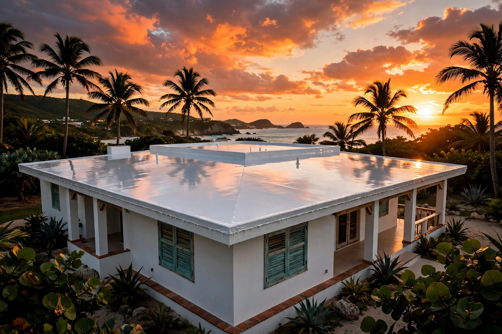

Luquillo • Área este
Adiós goteras,
Adiós goteras,
hola techo seco.
Goteras, filtraciones y humedad: sellado de techos en Luquillo con estimado gratis y trato de vecino.
Estimados gratis
Trato directo
Área este


Estimado gratisLlama hoy mismo